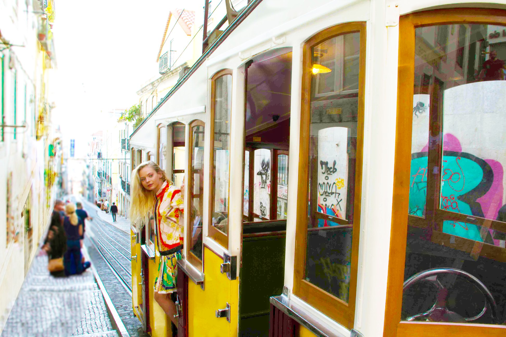
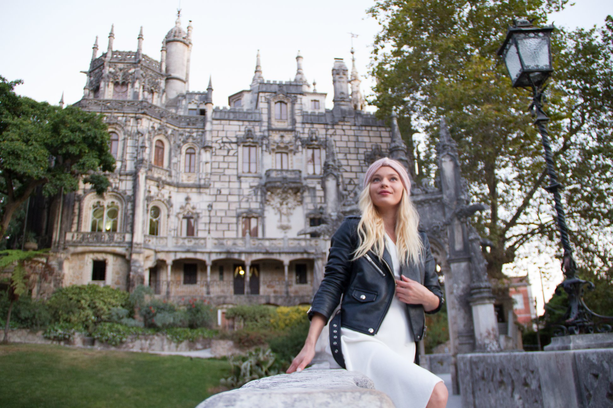
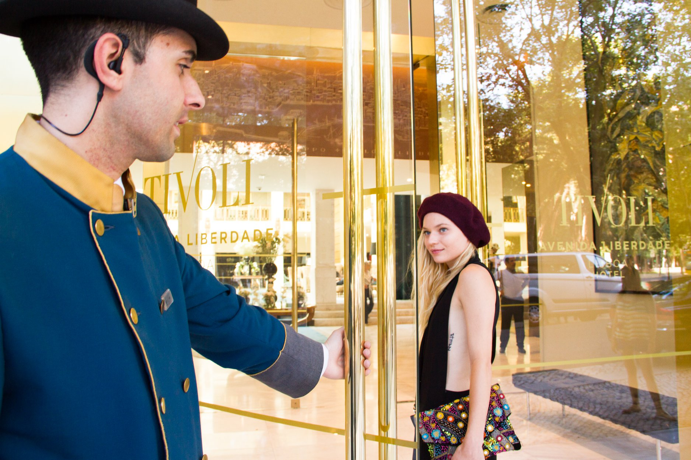
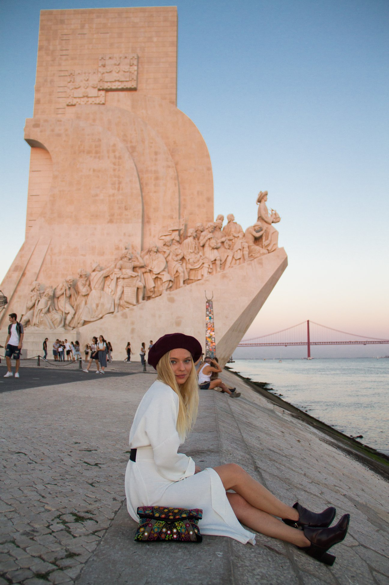
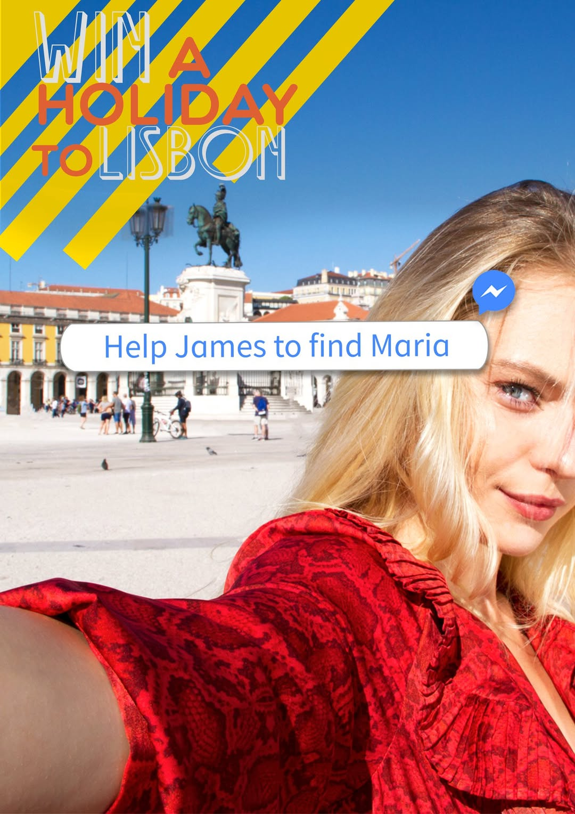

case study 04 —
an interactive video mystery, filmed in Lisbon, that ran on Facebook.
01 —
Cork Airport wanted to push their new route Lisbon — but competing on price alone wouldn't cut it. The ask: build something more than a static ad. Make people play.
Create an interactive Facebook Messenger campaign promoting Lisbon through a story-led, gamified experience designed to drive engagement and destination interest.
02 —
Created Love in Lisbon, following James Barter who meets Maria on a flight to Lisbon. After missing his chance to ask her out, he finds her again at the airport—only to have his suitcase stolen. The user helps him track her across the city.
Wrote the script and designed the game structure. Built a branching choice system where users receive video clues and select between three answers. Correct choices award points and progress the story.
Travelled to Lisbon with the team to film all content. Worked with an independent filmmaker to capture narrative scenes and social-style videos of Maria across key locations.
Led post-production and worked with marketing to integrate the experience into Facebook Messenger. Users activated the game by messaging “start” on the Travelnet.ie Facebook page.





on the phone —
The interactive heartbeat of the campaign — a vertical, mobile-first video built for Facebook Messenger, where the audience was already swiping through stories and chatting with friends. Native format, native behaviour.
Built for Messenger, watched on the phone.
The mobile-native edit — designed for vertical viewing inside Facebook Messenger, where the audience was already swiping. Same story, same mystery, reformatted for the format people actually use.
03 —
"A campaign people actually wanted to watch — and play — to the end."
Episode by episode, the audience treated comments like a detective board: tagging friends, theorising, and tracking clues across the city. The format reframed Cork Airport's communication from "here's a route" to "here's a story we're telling together."